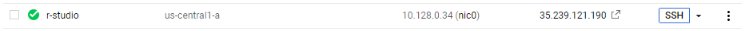
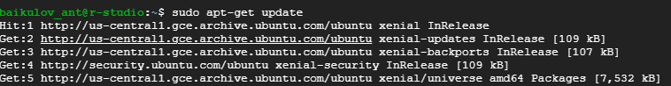
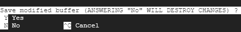
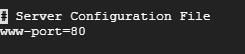
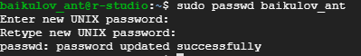
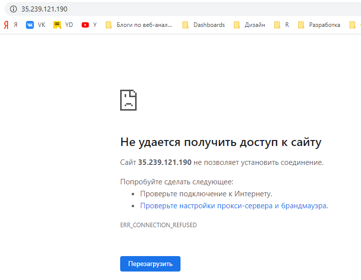
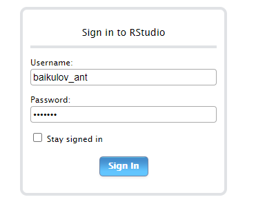

Установка R и R-studio на Linux
В данном примере мы рассмотрим установку языка R и R-studio IDE на Ubuntu 16.04
Выбор виртуальной машины
В качестве облачного сервиса, предоставляющего услуги по хостингу виртуальных машин мы выберем Google Cloud Platform с сервисом Compute Engine. Это очень удобное решение для тех, кто уже работает с другими сервисами от GCP.
Ранее я уже писал о том, как настроить и запустить VM на Google Cloud Platform через сервис Compute Engine. А сейчас перейдём к следующему шагу
Подготовка к установке
Для установки языка R в операционную систему Linux нам необходимо открыть терминал и вводить команды напрямую. Чтобы открыть терминал необходимо нажать на кнопку SSH.
 Терминал откроется в новом окне. После открытия терминала начинаем последовательно вводить команды
Первичное обновление Linux
Необходимо обновить все пакеты, установленные в версии Ubuntu 16.04
sudo apt-get updateВыглядит это примерно так

Добавление ссылки на репозиторий Cran
Установка будет производиться напрямую из репозитория Cran, поэтому необходимо добавить ссылку в файл /etc/apt/sources.list. Редактировать файл будем при помощи текстового редактора nano
sudo nano /etc/apt/sources.listОткроется содержимое файла. Спускаемся в самый низ и добавляем строчку
deb https://cran.rstudio.com/bin/linux/ubuntu xenial/
После этого нажимаем сочетание клавиш Ctrl+X для сохранения изменений. Нам предложат сохранить изменения - жмём Y

В последнем окне жмём Enter сохранения изменений в тот же файл.
Добавление публичного ключа
Ключ используется для удостоверения подлинности и надежности репозитория. И добавляется с помощью следующей команды:
sudo apt-key adv --keyserver keyserver.ubuntu.com --recv-keys 51716619E084DAB9которая запрашивает ключ напрямую у сервера сертификации Ubuntu — keyserver.ubuntu.com
После чего обновляем кеш всех доступных пакетов
sudo apt updateУстановка R и R-Studio
Установка R
Теперь можем установить необходимый нам пакет R с помощью команды:
sudo apt-get install r-base -yУстановка R-Studio
Помимо установки R, для удобства работы, нам нужно установить R Studio. И первым делом для этого нужно скачать установочный файл. Делаем это с помощью команды wget
wget https://download2.rstudio.org/rstudio-server-1.0.136-amd64.debТеперь, для того, чтобы провести установку R Studio, устанавливаем еще один пакет — gdebi. Gdebi — программа для установки .deb пакетов.
sudo apt-get install gdebi-core -yИ последней командой устанавливаем R Studio со скачанного файла:
sudo gdebi rstudio-server-1.0.136-amd64.debТеперь необходимо указать порт, при обращении к которому вы будете получать доступ в R Studio. Для этого нужно внести информацию в файл /etc/rstudio/rserver.conf. Делаем это с помощью команды
sudo nano /etc/rstudio/rserver.confи добавляем в файл следующую строку:
www-port=80
После этого задаем пароль для доступа в R Studio командой:
sudo passwd user_nameгде, вместо user_name используем имя пользователя. При вводе пароля вам будет казаться, что ничего не происходит, но на самом деле введенные символы запоминаются. После второго успешного ввода вы увидите примерно следующее:

Осталось перезапустить серверный R-Studio и можно приступать к работе.
sudo service rstudio-server restartЗапуск R-Studio
Чтобы попасть в привычный интерфейс R-Studio нужно перейти по внешнему адресу, указанному в интерфейсе Compute Engine в колонке External_IP
При переходе вы скорее всего увидете ошибку:

Это происходит потому, что подключаемся мы по протоколу HTTPS через порт 443, а наш R-server работает через протокол HTTP через порт 8080.
Удалите букву s в URL
И перед вами будет привычный интерфейс R-Studio с окошком для ввода логина и пароля.

Вводим логин/пароль и пользуемся R-Studio в облаке